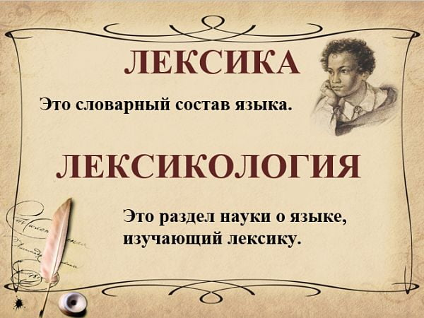
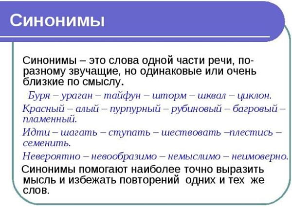

.jpg)
Лексика-совокупность слов того или иного языка, части языка или слов, которые знает тот или иной человек или группа людей.

Лексика сама по себе ничего не изучает. Лексика – это словарный состав языка, стилистического пласта, конкретного текста или множества текстов. Изучением лексики занимается лексикология, и именно этот раздел языкознания имеют в виду, упоминая о научных изысканиях в этой области. Итак, лексика – совокупность слов. Можно говорить о лексике языка (вообще любого, не только русского), лексике художественного произведения (к примеру, “Войны и мира” Толстого), лексике Бродского, лексике медиков, даже о “лексике подворотни”. Минимальная лексическая единица – это слово. Аспектов изучения слов в языкознании много, и лексикология ориентирована на изучение их значения, происхождения, исследование динамики словарного состава, отражения действительности в словаре. Так, лексикология рассматривает причины появления неологизмов и способы их образования, процессы устаревания слов и выпадения их из активного словаря, разбирает значения фразеологических оборотов и сочетаний. Лексическое значение – важнейший признак слов как самостоятельных единиц, которые выполняют номинативную функцию в языке: называют предметы и явления действительности. Лексика объединяет слова именно по значению, так же она и структурируется: образуются группы слов, сформированные по определенным характеристикам, — к примеру, антонимы. Формальные признаки слов тоже учитываются: так объединяются омонимы и паронимы. Лексика живого языка очень динамична и пластична, в ней постоянно появляются новые слова, а иные переходят из активного словаря в пассивный – тот, которым мы не пользуемся, но значения слов понимаем.
Лексикология включает в себя разделы, изучающие слова и словосочетания в разных аспектах. Так, семантика исследует смысловые значения единиц языка, фразеология – устойчивые речевые обороты, этимология – происхождение слов и выражений, ономастика изучает имена собственные, в том числе имена и фамилии людей, лексикография – теорию и практику составления словарей, ономасиология – разбирает процессы наименования в направлении от явления или предмета к слову, его обозначающему.
Синонимы — это слова одной части речи, различные по написанию и звучанию, но тождественные или близкие по значению. Узнаем, что такое синонимы в русском языке.
Узнаем, что такое синонимы в русском языке.
Чтобы уметь пользоваться лексическим богатством русского языка, хорошо владеть речью, важно знание и правильное употребление лингвистических средств, создающих точную и логичную речь. Такими лексическими средствами языка являются синонимы, антонимы, паронимы, омонимы.

Например, падение снега в ветреную погоду можно обозначить словами-синонимами:
По словообразовательному составу выделяют синонимы однокорневые (следствие — расследование) и разнокорневые (слепой — незрячий).
В лексике русского языка различают виды синонимов:
Семантические синонимы различаются только оттенками значения и образуют семантический ряд.
Синонимами являются слова:
Они образуют семантический ряд, в котором стилистически нейтральное и наиболее общее по смыслу слово «бой» выступает в качестве главного. Существительные «битва» и «сражение» принадлежат книжному стилю. Слово «сеча» носит архаичный оттенок.
Синонимами бывают слова одной части речи, например:
В синонимичном ряду «ломать», «разрушать», «громить», «крушить» отмечается нарастание действия по его интенсивности (ломать — крушить). Эти слова, отличающиеся оттенками значения, называются семантическими синонимами.
Слова, составляющие семантический ряд, могут иметь тончайшие оттенки в значениях, которые без контекста, как правило, не различаются. Вот, например, как Д. Фонвизин объясняет слова «ветхий», «древний», «старинный», «старый»:
Старо то, что давно было ново, старинным называется то, что ведется издавна. Давно то, чему много времени прошло. В настоящем употреблении ветхим называется то, что от старости истлело или обвалилось. Древне то, что происходило в отдаленных веках… Старый человек обыкновенно любит вспоминать давние происшествия и рассказывать о старинных обычаях; а если скуп, то в сундуках его найдёшь много ветхого.
Стилистические синонимы принадлежат разным стилям речи,начиная со стилистически нейтрального и заканчивая просторечными словами,например:
Очень важно чувствовать тончайшие смысловые и эмоционально-экспрессивные оттенки синонимов,чтобы наиболее точно выбрать слово и тем самым достичь точности выражения.Например,глагол <узнать> имеет большое количество стилистических вариантов:
Стилистические синонимы,обазночая одно и тоже явление действительности,имеют разную сферу употребления:
Синонимы называются абсолютными,если разные слова обозначают одно и то же и не имеют ни семантических,ни стилистических различий:
Особую группу составляют контекстуальные синонимы.Контекстуальные синонимы-это слова,сближение которых по значению происходит только в условиях определенного контекста. Вне этого контекста они не являются синонимами.В большинстве случаев контекстуальные синонимы имеющие экспрессивную окраску.Ихзадачей является не назвать явление,признак или процесс, а охарактеризовать его.Например,в определенных контекстах глагол<говорить>(сказать)имеет синонимы:
Синонимы призваны разнообразить нашу речь .Что бы не повторяться ,мы используем слово с тем же значением,но изучающее по-другому,то есть синоним.Иногда синоним нужен, чтобы подчеркнуть тонкое различие оттенка смысла,для более точного названия близких,но все же различающихся предметов,их свойств или действий.
| Синонимы | Антонимы |
|---|---|
| веселье-радость | грусть |
| аккуратно-опрятно | неряшлево |
| гостеприимно-радушно | неприветливо |
| громко -оглушительно | тихо |